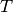
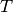
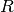

The Kalman Filter is a unsupervised algorithm for tracking a single object in a continuous state space. Given a sequence of noisy measurements, the Kalman Filter is able to recover the “true state” of the underling object being tracked. Common uses for the Kalman Filter include radar and sonar tracking and state estimation in robotics.
The advantages of Kalman Filter are:
- No need to provide labeled training data
- Ability to handle noisy observations
The disadvantages are:
- Computational complexity is cubic in the size of the state space
- Parameter optimization is non-convex and can thus only find local optima
- Inability to cope with non-Gaussian noise
Basic Usage¶
This module implements two algorithms for tracking: the Kalman Filter and Kalman Smoother. In addition, model parameters which are traditionally specified by hand can also be learned by the implemented EM algorithm without any labeled training data. All three algorithms are contained in the KalmanFilter class in this module.
In order to apply the Kalman Smoother, one need only specify the size of the state and observation space. This can be done directly by setting n_dim_state or n_dim_obs or indirectly by specifying an initial value for any of the model parameters from which the former can be derived:
>>> from pykalman import KalmanFilter
>>> kf = KalmanFilter(initial_state_mean=0, n_dim_obs=2)
The traditional Kalman Filter assumes that model parameters are known beforehand. The KalmanFilter class however can learn parameters using KalmanFilter.em() (fitting is optional). Then the hidden sequence of states can be predicted using KalmanFilter.smooth():
>>> measurements = [[1,0], [0,0], [0,1]]
>>> kf.em(measurements).smooth([[2,0], [2,1], [2,2]])[0]
array([[ 0.85819709],
[ 1.77811829],
[ 2.19537816]])
The Kalman Filter is parameterized by 3 arrays for state transitions, 3 for measurements, and 2 more for initial conditions. Their names and function are described in the next section.
See also
- examples/standard/plot_sin.py
- Tracking a sine signal
Choosing Parameters¶
Unlike most other algorithms, the Kalman Filter and Kalman Smoother are traditionally used with parameters already given. The KalmanFilter class can thus be initialized with any subset of the usual model parameters and used without fitting. Sensible defaults values are given for all unspecified parameters (zeros for all 1-dimensional arrays and identity matrices for all 2-dimensional arrays).
A Kalman Filter/Smoother is fully specified by its initial conditions (initial_state_mean and initial_state_covariance), its transition parameters (transition_matrices, transition_offsets, transition_covariance), and its observation parameters (observation_matrices, observation_offsets, observation_covariance). These parameters define a probabilistic model from which the unobserved states and observed measurements are assumed to be sampled from. The following code illustrates in one dimension what this process is.
from scipy.stats import norm
import numpy as np
states = np.zeros((n_timesteps, n_dim_state))
measurements = np.zeros((n_timesteps, n_dim_obs))
for t in range(n_timesteps-1):
if t == 0:
states[t] = norm.rvs(initial_state_mean, np.sqrt(initial_state_covariance))
measurements[t] = (
np.dot(observation_matrices[t], states[t])
+ observation_offsets[t]
+ norm.rvs(0, np.sqrt(observation_covariance))
)
states[t+1] = (
np.dot(transition_matrices[t], states[t])
+ transition_offsets[t]
+ norm.rvs(0, np.sqrt(transition_covariance))
)
measurements[t+1] = (
np.dot(observation_matrices[t+1], states[t+1])
+ observation_offsets[t+1]
+ norm.rvs(np.sqrt(observation_covariance))
)
The selection of these variables is not an easy one, and, as shall be explained in the section on fitting, should not be left to KalmanFilter.em() alone. If one ignores the random noise, the parameters dictate that the next state and the current measurement should be an affine function of the current state. The additive noise term is then simply a way to deal with unaccounted error.
A simple example to illustrate the model parameters is a free falling ball in one dimension. The state vector can be represented by the position, velocity, and acceleration of the ball, and the transition matrix is defined by the equation:
position[t+dt] = position[t] + velocity[t] dt + 0.5 acceleration[t] dt^2
Taking the zeroth, first, and second derivative of the above equation with respect to dt gives the rows of transition matrix:
A = np.array([[1, t, 0.5 * (t**2)],
[0, 1, t],
[0, 0, 1]])
We may also set the transition offset to zero for the position and velocity components and -9.8 for the acceleration component in order to account for gravity’s pull.
It is often very difficult to guess what appropriate values are for for the transition and observation covariance, so it is common to use some constant multiplied by the identity matrix. Increasing this constant is equivalent to saying you believe there is more noise in the system. This constant is the amount of variance you expect to see along each dimension during state transitions and measurements, respectively.
Inferring States¶
The KalmanFilter class comes equipped with two algorithms for prediction: the Kalman Filter and the Kalman Smoother. While the former can be updated recursively (making it ideal for online state estimation), the latter can only be done in batch. These two algorithms are accessible via KalmanFilter.filter(), KalmanFilter.filter_update(), and KalmanFilter.smooth().
Functionally, Kalman Smoother should always be preferred. Unlike the Kalman
Filter, the Smoother is able to incorporate “future” measurements as well as
past ones at the same computational cost of  where  is
the number of time steps and d is the dimensionality of the state space. The
only reason to prefer the Kalman Filter over the Smoother is in its ability to
incorporate new measurements in an online manner:
where  is
the number of time steps and d is the dimensionality of the state space. The
only reason to prefer the Kalman Filter over the Smoother is in its ability to
incorporate new measurements in an online manner:
>>> means, covariances = kf.filter(measurements)
>>> next_mean, next_covariance = kf.filter_update(
means[-1], covariances[-1], new_measurement
)
Both the Kalman Filter and Kalman Smoother are able to use parameters which vary with time. In order to use this, one need only pass in an array n_timesteps in length along its first axis:
>>> transition_offsets = [[-1], [0], [1], [2]]
>>> kf = KalmanFilter(transition_offsets=transition_offsets, n_dim_obs=1)
See also
- examples/standard/plot_online.py
- Online State Estimation
- examples/standard/plot_filter.py
- Filtering and Smoothing
Optimizing Parameters¶
In addition to the Kalman Filter and Kalman Smoother, the KalmanFilter class implements the Expectation-Maximization algorithm. This iterative algorithm is a way to maximize the likelihood of the observed measurements (recall the probabilistic model induced by the model parameters), which is unfortunately a non-convex optimization problem. This means that even when the EM algorithm converges, there is no guarantee that it has converged to an optimal value. Thus it is important to select good initial parameter values.
A second consideration when using the EM algorithm is that the algorithm lacks regularization, meaning that parameter values may diverge to infinity in order to make the measurements more likely. Thus it is important to choose which parameters to optimize via the em_vars parameter of KalmanFilter. For example, in order to only optimize the transition and observation covariance matrices, one may instantiate KalmanFilter like so:
>>> kf = KalmanFilter(em_vars=['transition_covariance', 'observation_covariance'])
It is customary optimize only the transition_covariance, observation_covariance, initial_state_mean, and initial_state_covariance, which is the default when em_vars is unspecified. In order to avoid overfitting, it is also possible to specify the number of iterations of the EM algorithm to run during fitting:
>>> kf.em(X, n_iter=5)
Each iteration of the EM algorithm requires running the Kalman Smoother anew, so its computational complexity is where is the number of time steps, n is the number of iterations, and d is the size of the state space.
See also
- examples/standard/plot_em.py
- Using the EM Algorithm
Missing Measurements¶
In real world systems, it is common to have sensors occasionally fail. The Kalman Filter, Kalman Smoother, and EM algorithm are all equipped to handle this scenario. To make use of it, one only need apply a NumPy mask to the measurement at the missing time step:
>>> from numpy import ma
>>> X = ma.array([1,2,3])
>>> X[1] = ma.masked # hide measurement at time step 1
>>> kf.em(X).smooth(X)
See also
- examples/standard/plot_missing.py
- State Estimation with Missing Observations
Mathematical Formulation¶
In order to understand when the algorithms in this module will be effective, it
is important to understand what assumptions are being made. To make notation
concise, we refer to the hidden states as  , the measurements as
, the measurements as
 , and the parameters of the KalmanFilter class as follows,
, and the parameters of the KalmanFilter class as follows,
Parameter Name Notation initial_state_mean initial_state_covariance transition_matrices transition_offsets transition_covariance observation_matrices observation_offsets observation_covariance 


In words, the Linear-Gaussian model assumes that for all time steps  (here, is the number of time steps),
(here, is the number of time steps),
 is distributed according to a Gaussian distribution
is distributed according to a Gaussian distribution is an affine transformation of and additive
Gaussian noise
is an affine transformation of and additive
Gaussian noise is an affine transformation of
is an affine transformation of  and additive
Gaussian noise
and additive
Gaussian noise
These assumptions imply that that is always a Gaussian
distribution, even when is observed. If this is the case, the
distribution of and are completely
specified by the parameters of the Gaussian distribution, namely its mean and
covariance. The Kalman Filter and Kalman Smoother calculate these values,
respectively.
Formally, the Linear-Gaussian Model assumes that states and measurements are generated in the following way,
The Gaussian distribution is characterized by its single mode and exponentially decreasing tails, meaning that the Kalman Filter and Kalman Smoother work best if one is able to guess fairly well the vicinity of the next state given the present, but cannot say exactly where it will be. On the other hand, these methods will fail if there are multiple, disconnected areas where the next state could be, such as if a car turns one of three ways at an intersection.
References:
- Abbeel, Pieter. “Maximum Likelihood, EM”. http://www.cs.berkeley.edu/~pabbeel/cs287-fa11/
- Yu, Byron M. and Shenoy, Krishna V. and Sahani, Maneesh. “Derivation of Kalman Filtering and Smoothing Equations”. http://www.ece.cmu.edu/~byronyu/papers/derive_ks.pdf
- Ghahramani, Zoubin and Hinton, Geoffrey E. “Parameter Estimation for Linear Dynamical Systems.” http://mlg.eng.cam.ac.uk/zoubin/course04/tr-96-2.pdf
- Welling, Max. “The Kalman Filter”. http://www.cs.toronto.edu/~welling/classnotes/papers_class/KF.ps.gz